Lectures in this section
Redshift is the largest section in the course — give it three study days. Labs reuse bucket dea-lab-<initials>-<random> and data/customers.csv.
- Redshift overview and when a warehouse beats a lake~8:00Slides 256–259
- Cluster architecture: leader node, compute nodes, slices~10:00Slides 261–264
- Redshift Managed Storage (RMS)~4:00Slides 266
- Node types: RA3 versus DC2~6:00Slides 268–269
- Elastic resize, classic resize, snapshot-and-restore~6:00Slides 271–272
- Automated and manual snapshots~5:00Slides 274–276
- Cross-Region and cross-account data sharing~4:00Slide 278
- Distribution styles, sort keys, and zone maps~12:00Slides 280–284
- VACUUM, ANALYZE, and table maintenance~8:00Slides 287–289
- Integrations, COPY, UNLOAD, auto-copy, zero-ETL~12:00Slides 291–297
- ETL versus ELT design patterns~6:00Slides 298–303
- Federated queries to RDS and Aurora~5:00Slides 305–307
- Materialized views and streaming ingestion~8:00Slides 309–314
- Redshift Spectrum over S3~10:00Slides 316–322
- System tables and views for troubleshooting~6:00Slides 324–327
- Redshift Data API for Lambda and serverless callers~5:00Slides 329–333
- Data sharing: producer and consumer datashares~6:00Slides 335–340
- Workload management and concurrency scaling~8:00Slides 342–347
- Redshift Serverless versus provisioned~6:00Slides 349–351
- Redshift ML and CREATE MODEL~4:00Slides 353–355
- Encryption, VPC, audit logging~5:00Slides 357–359
- Users, groups, RBAC, IAM authentication~8:00Slides 361–367
- Fine-grained access control: columns, rows, masking~8:00Slides 368–373
Redshift overview
Amazon Redshift is AWS's fully managed, petabyte-scale columnar data warehouse. It runs ANSI SQL, connects from the Redshift query editor v2 (browser-based SQL IDE in the console — no VPN or JDBC install needed for labs) or any JDBC/ODBC BI tool, and is the default answer when an exam scenario needs fast analytical SQL over modelled, structured data at high concurrency.
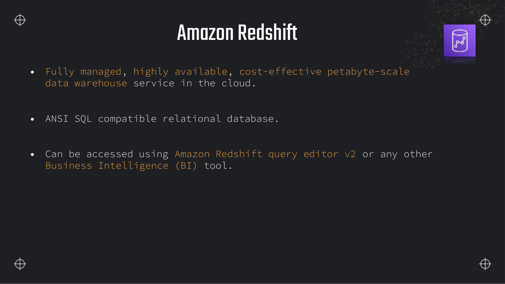
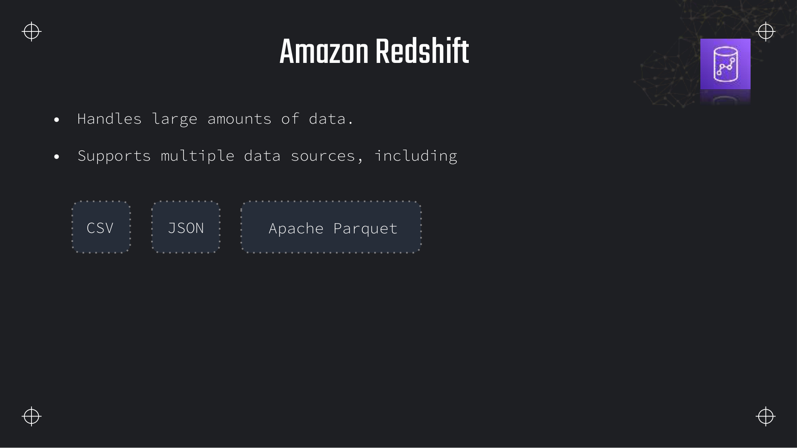
When a warehouse beats a data lake
A data lake (S3 + Athena) wins on cheap storage of raw, schema-on-read data. A warehouse wins when many concurrent users need fast, repeatable SQL over cleaned, typed, joined tables — BI dashboards, executive reporting, regulated financial models. Redshift applies schema on write, pre-aggregates with sort keys and zone maps, and uses MPP to scan billions of rows in seconds. Hybrid architectures land raw in S3 and load curated subsets into Redshift, or query the lake in place with Spectrum.
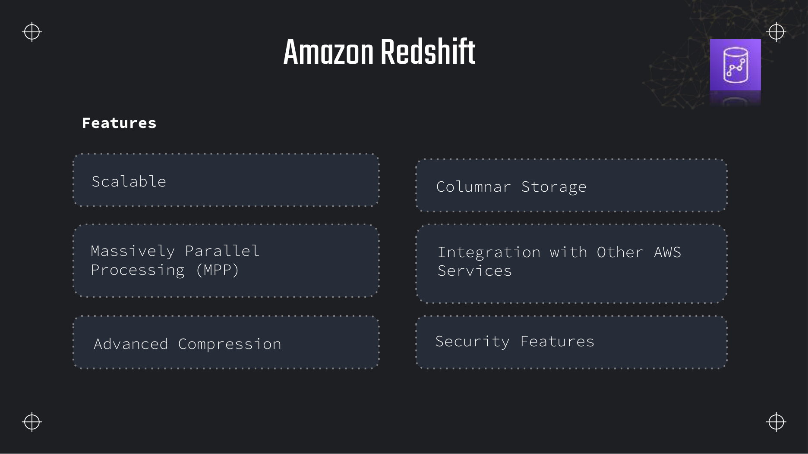
Columnar storage, compression, and zone maps
Redshift stores each column separately on disk. Analytical queries that touch five columns out of eighty read only those five — unlike row stores that pull entire rows. Each column uses an encoding chosen by ENCODE AUTO (default) or by ANALYZE COMPRESSION, which samples data and recommends encodings per column. Zone maps store min/max values for each 1 MB block on disk; if your WHERE clause filters on the sort key, the leader node skips blocks whose zone map proves they cannot contain matching rows.
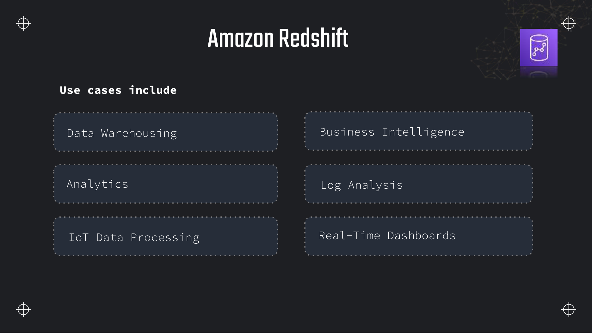
Redshift query editor v2
The console query editor v2 is the zero-install SQL client for labs and ad-hoc work. It supports provisioned clusters and Serverless workgroups, saves query history, visualizes execution plans, and integrates with IAM authentication — no JDBC driver or bastion host. For production BI, tools like QuickSight, Tableau, and Power BI still connect via JDBC/ODBC, but every exam lab scenario that says "run SQL in the console" means query editor v2.
Cluster architecture
A Redshift cluster is the core infrastructure: one Redshift engine, one or more databases, continuous backups, automatic failure recovery, and replication for multi-AZ RA3 deployments. Workloads arrive from BI tools, the query editor v2, the Data API, or ETL jobs over JDBC.
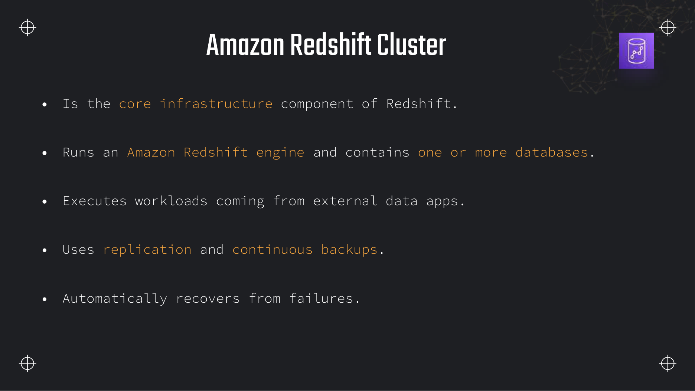
Leader node, compute nodes, and slices
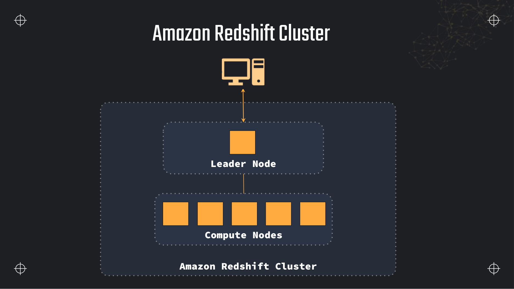
Leader node responsibilities
The leader node receives SQL from clients, parses it, builds a distributed execution plan, assigns work to compute-node slices, and aggregates partial results before returning the final answer. It holds metadata (table definitions, distribution keys, statistics) but, in a multi-node cluster, does not store user table data — only compute nodes do.
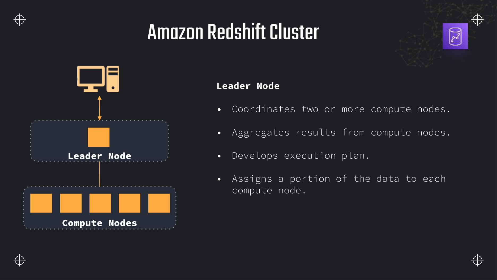
SVL_QUERY_REPORT.Compute nodes, slices, and node types
Compute nodes execute query steps, store data (or cache hot blocks from RMS), and shuffle rows among themselves during joins. Each compute node is divided into slices — independent memory/CPU partitions that process data in parallel. Slice count depends on node type: dc2.large has 2 slices, dc2.8xlarge has 16, ra3.xlplus has 4, ra3.4xlarge has 12, ra3.16xlarge has 48. Total cluster slices = slices per node × number of compute nodes. COPY and query parallelism target slice count — split input files to a multiple of total slices for even load.
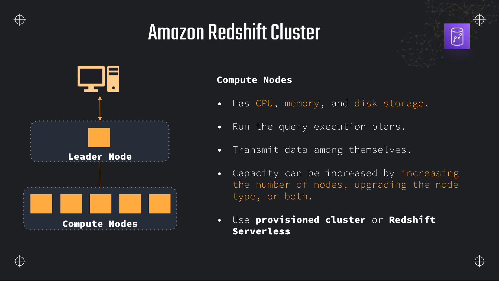
Single-node versus multi-node
A single-node cluster uses one node that acts as both leader and compute — fine for dev/test under ~160 GB. A multi-node cluster has one leader plus two or more compute nodes; production workloads almost always use multi-node or Serverless. Single-node cannot use concurrency scaling or some advanced features.
Redshift Managed Storage
Redshift Managed Storage (RMS) on RA3 nodes separates compute from durable storage. Hot data sits on high-performance local SSDs; colder blocks migrate automatically to S3 behind the scenes. You pay one RMS rate regardless of whether bytes are on SSD or S3.
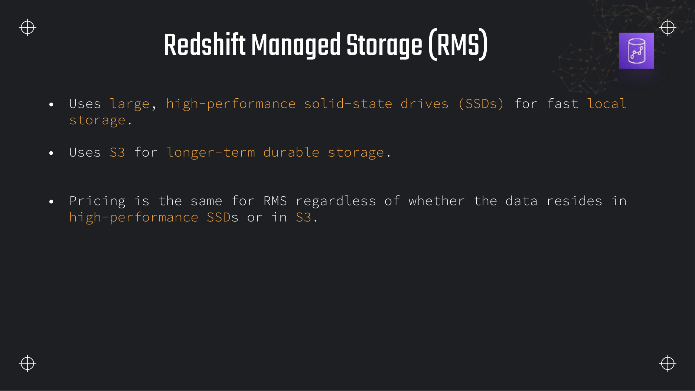
RA3 nodes cache frequently accessed blocks locally and fetch from S3 on cache miss. This is transparent to SQL — you do not manage tiers. Resize compute without moving data: add RA3 nodes for query power while storage stays in RMS. Cross-Region snapshot restore and data sharing require RA3 or Serverless.
DS2 legacy note: DS2 nodes used HDD-local storage and are end-of-life path — migrate to RA3 via elastic resize (if supported) or snapshot restore. Exam questions mentioning DS2 → RA3 migration expect classic resize or snapshot, not a simple reboot.
Node types: RA3 versus DC2
Choose node type at cluster creation (or migrate with elastic/classic resize). DS2 is legacy — AWS recommends migrating DS2 workloads to RA3. For new clusters, pick RA3 for anything over ~1 TB compressed or when you need multi-AZ; pick DC2 for small, cost-sensitive dev clusters under 1 TB.
| Dimension | RA3 | DC2 |
|---|---|---|
| Storage model | RMS — local SSD cache + S3 durability | Local SSD only; data moves with nodes |
| Sizes | ra3.xlplus, ra3.4xlarge, ra3.16xlarge | dc2.large, dc2.8xlarge |
| When to choose | Production, >1 TB, multi-AZ, data sharing, Spectrum at scale | Dev/test, <1 TB compressed, lowest hourly cost |
| Scaling storage | Pay per GB in RMS; add compute nodes without rebalancing data | Add nodes — storage scales only with node count |
| Managed storage | Yes (RMS) | No |
| Price shape | Compute hourly + RMS per GB-month | All-in hourly (compute + local disk bundled) |
| Availability | Multi-AZ supported | Single AZ only |
dc2.large single-node cluster costs roughly 0.25 USD/hour and is not free tier. A weekend left running is ~12 USD. Prefer Redshift Serverless with base capacity 8 RPUs for short labs, or delete the cluster the same hour.Resizing clusters
Resize when query latency grows, storage fills, or you migrate node families (DC2 → RA3). Three mechanisms exist; the exam tests which is fast, which allows node-type changes, and whether the cluster stays available.
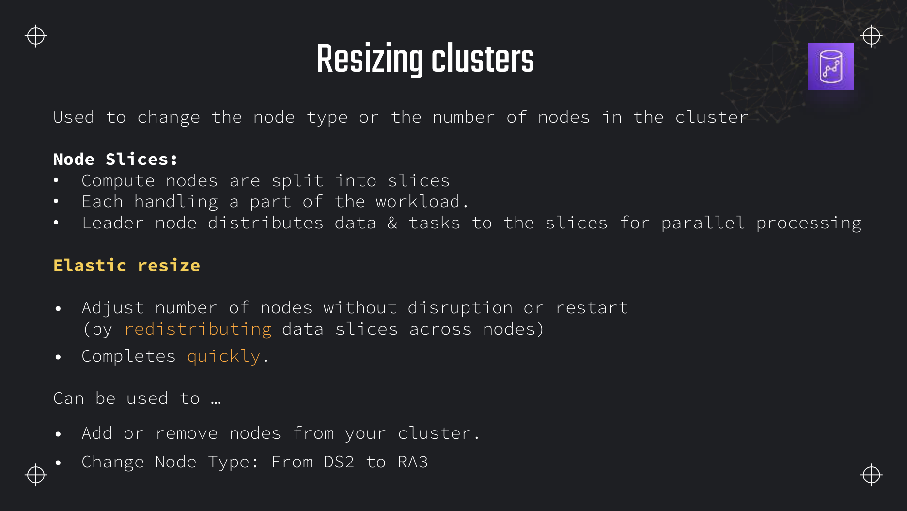
| Method | What changes | Duration | Availability | Constraints |
|---|---|---|---|---|
| Elastic resize | Node count (same node type) or some node-type upgrades | Minutes | Cluster stays up; brief read-only periods possible | Limited node-count delta per operation (often 2× up or ½ down — check current limits for your type) |
| Classic resize | Node type, large node-count changes | Hours to days (copies all data) | Cluster available but slower during copy | Use when elastic resize is not supported for your target configuration |
| Snapshot → restore | Anything — new Region, new account, new node type/count | Depends on data size | New cluster; old cluster unchanged until deleted | Creates a new cluster from snapshot; good for DR and migrations |
Elastic resize node-count constraints
Elastic resize is fast because it redistributes slices without a full data copy, but AWS limits how far you can jump in one operation — typically you can double node count or halve it (exact limits vary by source/target node type; check the console resize wizard). To go from 2 nodes to 20, chain multiple elastic resizes or use classic resize. Changing from DC2 to RA3 often requires classic resize or snapshot-restore because node families store data differently (local SSD vs RMS).
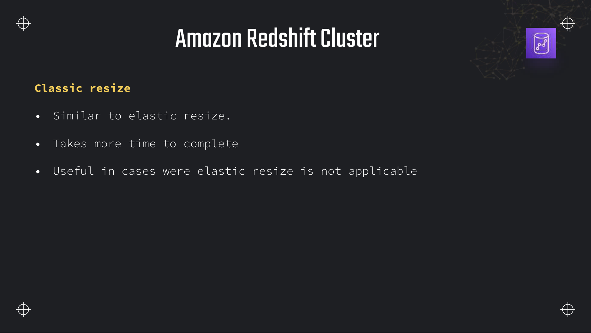
Snapshots
Snapshots are point-in-time cluster backups stored internally on S3. They are incremental — only changed blocks since the last snapshot are written — and underpin disaster recovery, cloning, and cross-Region migration.
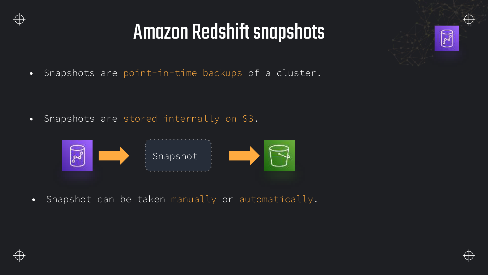
Automated snapshots
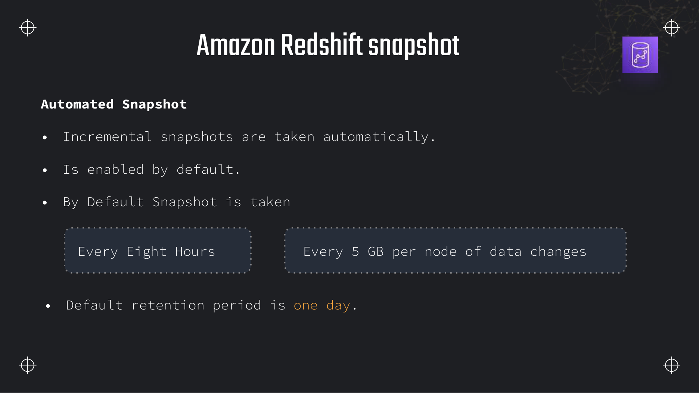
Manual snapshots
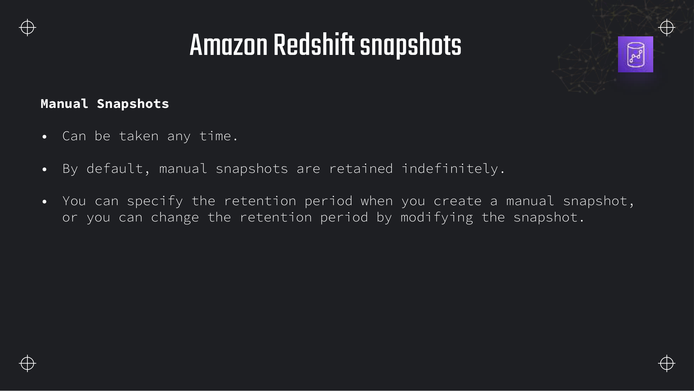
Cross-Region snapshot copy enables DR in another Region. Restore creates a new cluster from a snapshot — it does not overwrite the source. To restore a single table, use the AWS CLI/API restore-table-from-cluster-snapshot: specify source snapshot, source table, and a new table name in the target cluster — Redshift copies only that table's data without restoring the entire cluster. Alternatively restore snapshot to a temporary cluster, CREATE TABLE … AS SELECT, and COPY or UNLOAD/COPY into production.
Snapshot retention and billing
Automated snapshot storage beyond the free tier for your node count accrues standard S3-backed snapshot charges. Manual snapshots persist until deleted — a common cost leak in lab accounts. Set explicit retention on manual snapshots used for migration testing. Deleting a cluster offers "final snapshot" — always take one before deleting production, skip for throwaway labs.
Cross-Region and cross-account sharing
Redshift supports sharing data across Regions and accounts without manual S3 export/import. Cross-Region datashares (see Data sharing) and cross-Region snapshot copy cover most patterns. Both producer and consumer must use encrypted RA3 or Serverless for cross-account/Region datashares.
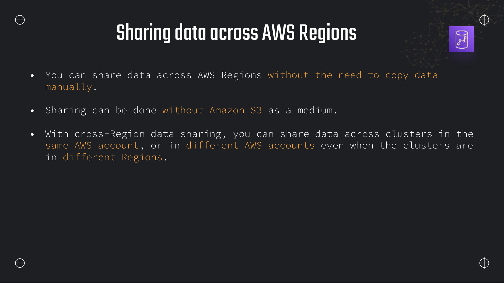
Distribution styles and sort keys
Redshift physically shards table rows across compute-node slices. Distribution style and DISTKEY decide which slice owns which rows; SORTKEY decides order within a slice. Wrong choices cause skew (one slice does all the work) or expensive redistribution steps during joins — the two most common reasons a Redshift query is slow.
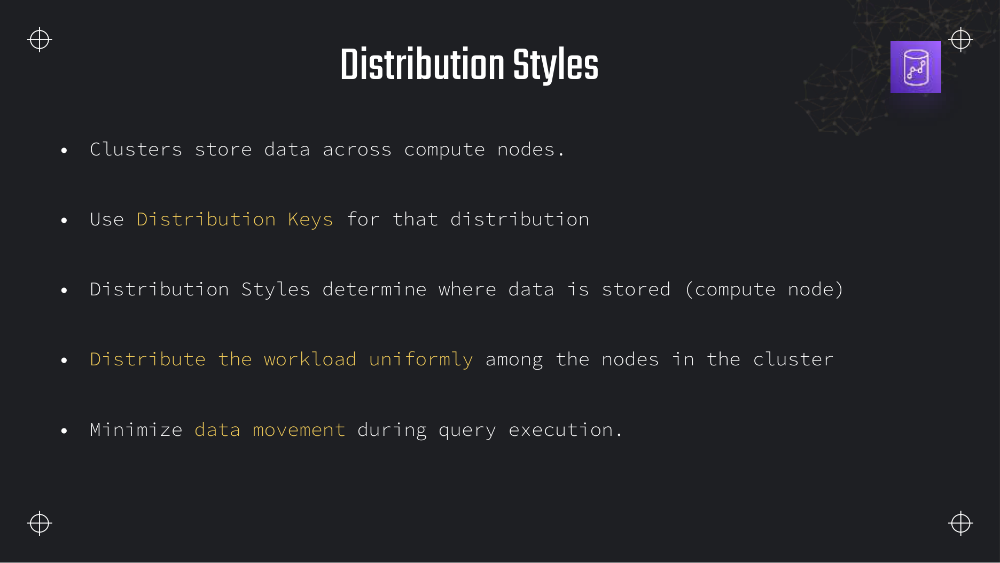
KEY distribution
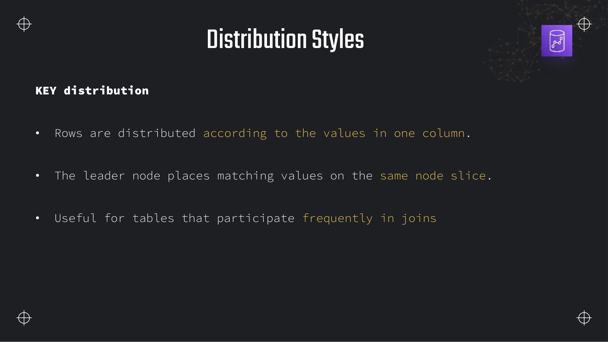
ALL distribution
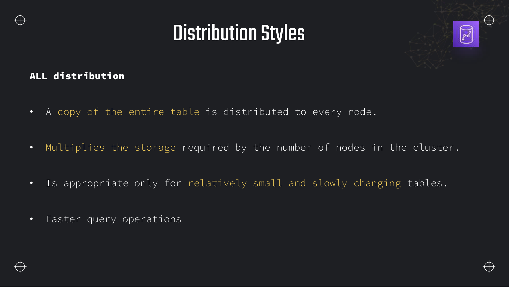
EVEN distribution
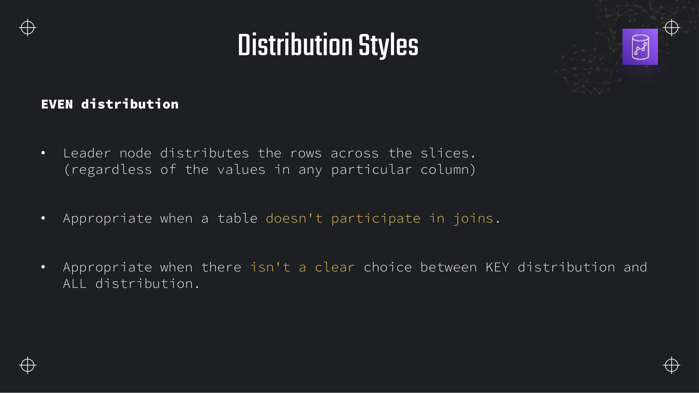
AUTO distribution
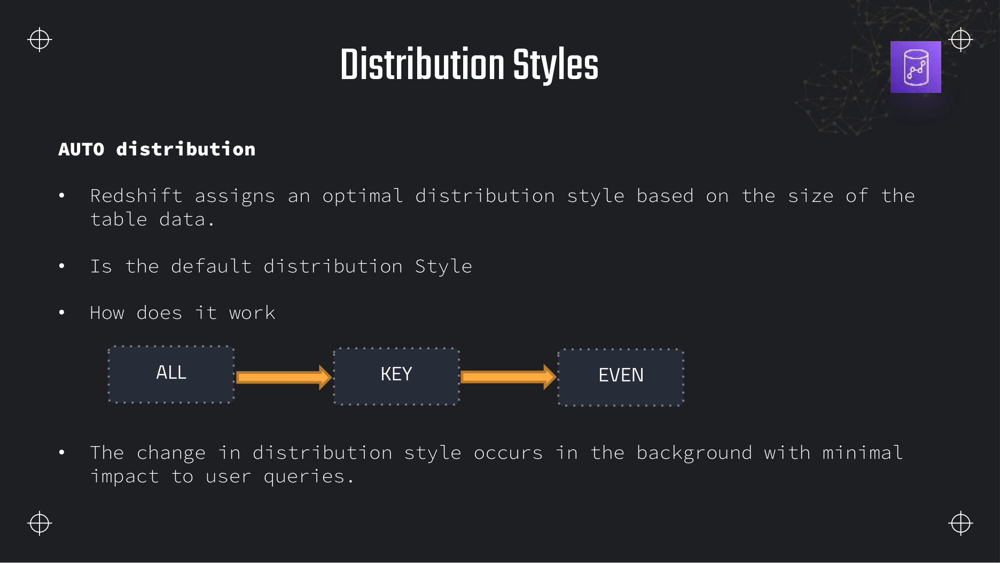
SVV_ALTER_TABLE_RECOMMENDATIONS for pending suggestions.| Style | Physical behaviour | Skew risk | When to pick |
|---|---|---|---|
| KEY | Hash on DISTKEY → same values co-located | High if one value dominates | Large fact tables with frequent equi-joins on one column |
| ALL | Full replica on every node | None (every node has everything) | Small, slow-changing dimensions (< ~2 GB after compression) |
| EVEN | Round-robin across slices | Low | Staging tables, no clear join key, or tables that never join |
| AUTO | Redshift decides; may alter over time | Managed by service | Default for new tables; override when you know the join pattern |
Sort keys: compound, interleaved, and AUTO
Compound sort keys order rows by column precedence — first column primary, then second, etc. Best when queries filter on leading columns. Interleaved sort keys give equal weight to multiple columns — better when filters vary across columns, but expensive to maintain (requires VACUUM REINDEX). SORTKEY AUTO (default on newer clusters) lets Redshift choose and adjust sort keys automatically, similar to AUTO distribution.
Zone maps track min/max per 1 MB block on disk. Filters and joins on sort-key columns skip irrelevant blocks — often a 10×–100× scan reduction. The core tuning move: DISTKEY on the join column, SORTKEY on the filter column (often the same).
CREATE TABLE dim_customer (
customer_id INTEGER PRIMARY KEY,
customer_name VARCHAR(100),
region VARCHAR(20)
)
DISTSTYLE ALL;
CREATE TABLE fact_sales (
sale_id BIGINT,
customer_id INTEGER,
sale_date DATE,
amount DECIMAL(12,2)
)
DISTSTYLE KEY
DISTKEY (customer_id)
SORTKEY (sale_date);
CREATE TABLE staging_sales (
sale_id BIGINT,
customer_id INTEGER,
sale_date DATE,
amount DECIMAL(12,2)
)
DISTSTYLE EVEN
SORTKEY AUTO;Compound versus interleaved sort keys in practice
With a compound key SORTKEY (sale_date, customer_id), a filter on sale_date uses the zone map efficiently; a filter on customer_id alone does not. With interleaved keys giving equal weight to both columns, either filter works — but every VACUUM that re-sorts must touch all interleaved columns, making maintenance expensive on large tables. AWS recommends compound keys unless query filters are evenly split across multiple columns with no clear leading column. Prefer SORTKEY AUTO on new tables and override only when profiling proves a specific compound key wins.
Detecting skew and unsorted data
Run SELECT "table", skew_rows, skew_sortkey1, unsorted FROM svv_table_info ORDER BY skew_rows DESC; after major loads. skew_rows above ~4.0 means one slice holds disproportionate rows — often a bad DISTKEY (too many NULLs or one dominant key). High unsorted means zone maps are stale; range filters scan extra blocks. SVV_ALTER_TABLE_RECOMMENDATIONS may suggest AUTO key changes when the optimizer detects repeated redistribution steps on the same table.
VACUUM and table maintenance
Redshift is append-optimized: DELETE and UPDATE mark old rows dead but do not reclaim space immediately. Unsorted inserts degrade zone-map efficiency. VACUUM reclaims space and re-sorts; ANALYZE refreshes statistics so the planner picks good plans.
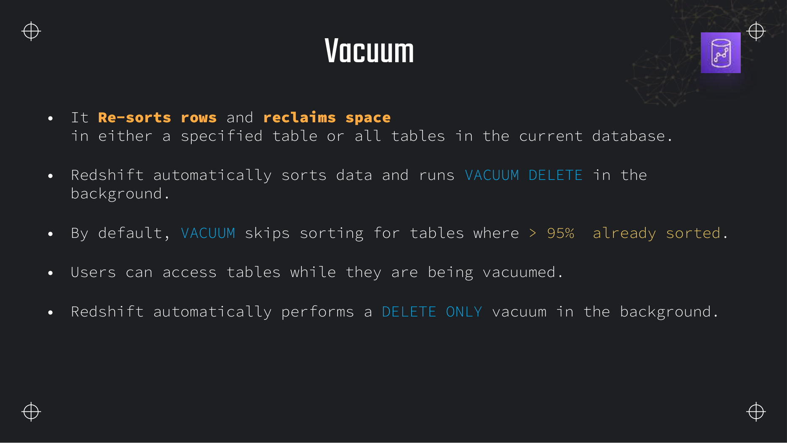
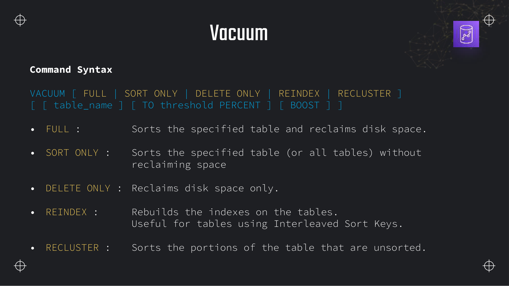
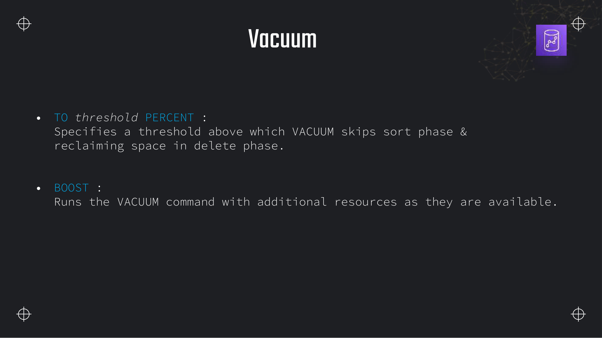
TO threshold PERCENT skips sort/reclaim if already sorted enough. BOOST allocates extra resources when the cluster is quiet.-- Reclaim space and resort after bulk delete
VACUUM FULL fact_sales TO 95 PERCENT;
-- Rebuild interleaved sort key statistics
VACUUM REINDEX fact_events;
-- Boost priority during maintenance window
VACUUM DELETE ONLY staging_sales BOOST;
-- Refresh planner statistics (also runs auto-analyze by default)
ANALYZE fact_sales;
-- Sample encodings for new columns
ANALYZE COMPRESSION fact_sales;Query SVV_TABLE_INFO for unsorted (percent out of sort order), skew_rows, and vacuum_sort_benefit to find tables needing maintenance. High unsorted after loads means zone maps are stale and scans read extra blocks.
Auto-vacuum and auto-analyze
Redshift runs auto-vacuum (DELETE ONLY by default, plus sort when benefit exceeds threshold) and auto-analyze after COPY and significant DML without manual intervention. You can alter table-level settings with ALTER TABLE … SET (autovacuum_enabled, auto_analyze_enabled) on supported versions. When auto maintenance falls behind during heavy ETL windows, schedule manual VACUUM and ANALYZE in the maintenance slot. STL_VACUUM logs historical vacuum operations; compare start/end times to WLM queue depth to see if vacuum is starved.
Integrations and loading
Redshift sits at the centre of AWS analytics — ingesting from S3, streams, operational databases, and ETL services. The exam favours COPY over INSERT for bulk loads and zero-ETL over custom CDC pipelines when the source is Aurora or RDS.
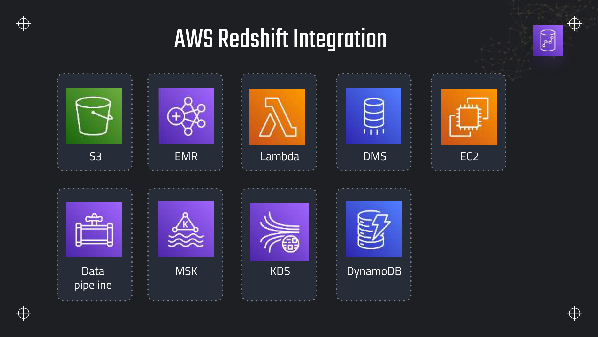
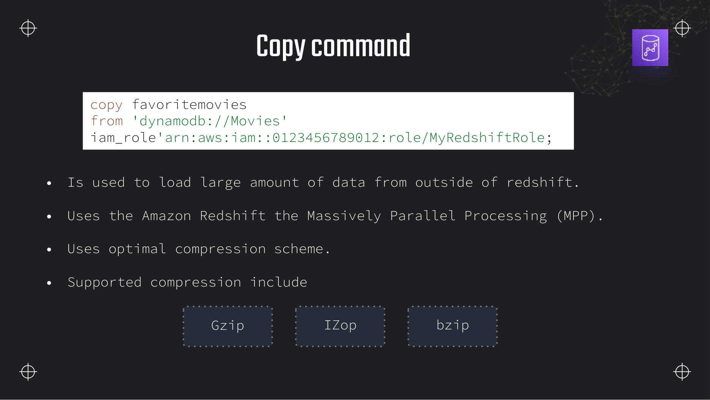
Recommended S3 load path: staging → curated with MERGE
COPY from S3 in depth
Attach an IAM role to the cluster with S3 read permissions. Split files so count is a multiple of total slices (e.g. 32 files for 16 slices). Use a manifest file when loading many objects. FORMAT AS PARQUET reads columnar data efficiently. COMPUPDATE ON (default) analyses sample rows and applies encodings via the same logic as ANALYZE COMPRESSION. MAXERROR allows a tolerance for bad rows — check STL_LOAD_ERRORS for rejects. For encrypted S3 objects, COPY decrypts on the fly when the role has KMS decrypt permission.
Manifest file format
A COPY manifest is a JSON file listing S3 URLs and optional metadata. Redshift loads every file listed — useful when thousands of partition files exist under a prefix. Example entries: {"url": "s3://bucket/path/file.parquet", "mandatory": true}. Set mandatory: false to skip missing files without failing the whole load.
Why COPY beats INSERT
INSERT sends rows through the leader one batch at a time — one slice does the work, others idle. COPY assigns each slice a file segment (or whole file) and loads in parallel, applying encodings from ANALYZE COMPRESSION analysis. For 500 GB, COPY is orders of magnitude faster and is the only acceptable bulk-load answer on the exam.
COPY staging.customers
FROM 's3://dea-lab-ab-4821/staging/customers/manifest.json'
IAM_ROLE 'arn:aws:iam::123456789012:role/RedshiftLoadRole'
FORMAT AS PARQUET
MANIFEST
COMPUPDATE ON
MAXERROR 10
REGION 'us-east-1';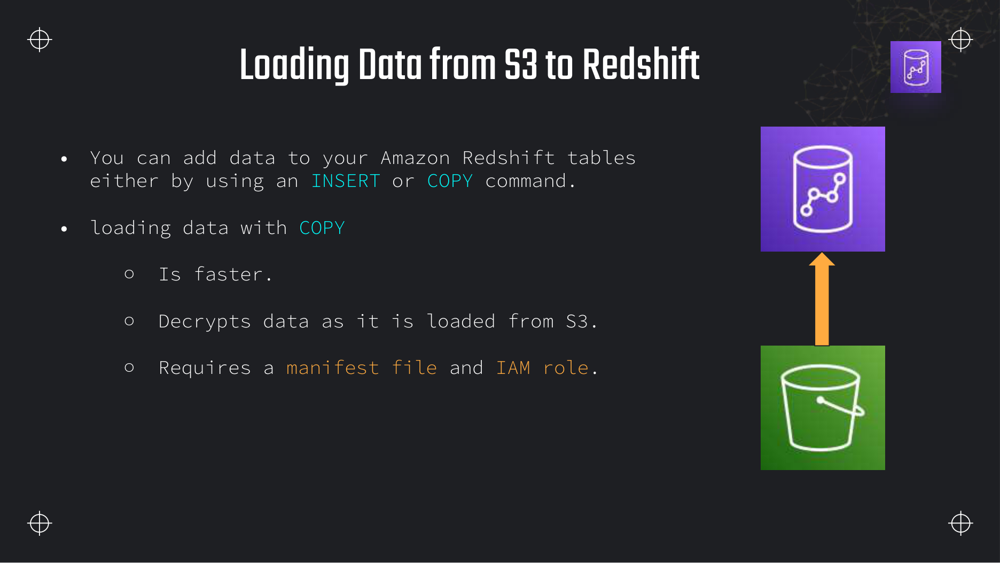
UNLOAD to S3
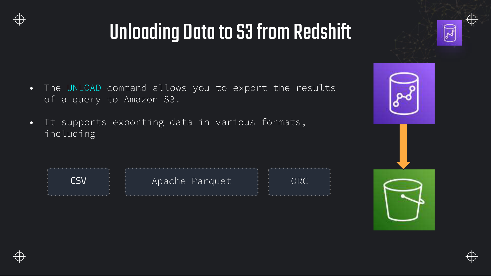
UNLOAD ('SELECT * FROM curated.sales WHERE sale_date >= ''2024-01-01''')
TO 's3://dea-lab-ab-4821/curated/sales/'
IAM_ROLE 'arn:aws:iam::123456789012:role/RedshiftLoadRole'
FORMAT AS PARQUET
PARTITION BY (sale_date)
HEADER
PARALLEL ON
ALLOWOVERWRITE;Auto-copy from S3 and enhanced VPC routing
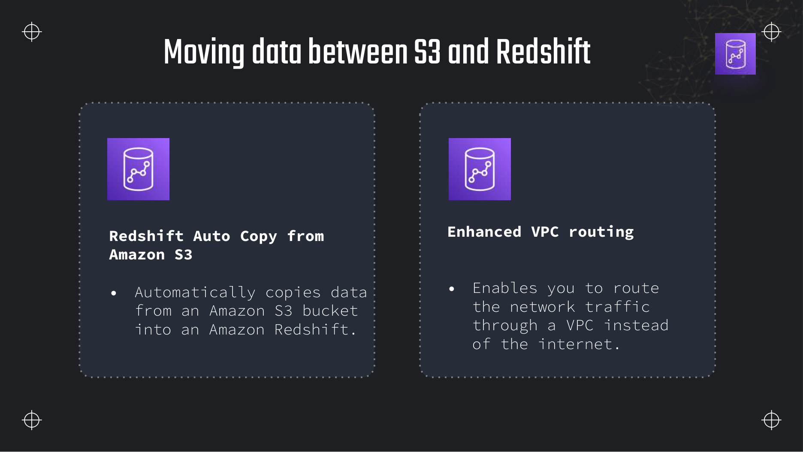
Redshift auto-copy from S3
Auto-copy monitors an S3 event path and invokes COPY when new objects land — no Lambda, no EventBridge rule you maintain. Configure source bucket/prefix, target table, IAM role, and file format in the Redshift console or API. Idempotency depends on file naming: use date partitions or UUID prefixes so a repeated drop does not duplicate rows, or load to staging and MERGE. Pairs naturally with S3 event notifications and the course bucket layout (raw/ → staging/ → curated/).
Zero-ETL integration
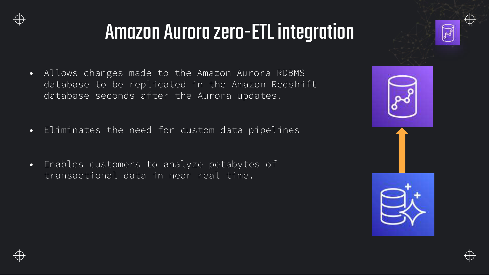
Transformation design patterns
Redshift supports both traditional ETL (transform before load) and modern ELT (load raw, transform in-database). AWS and the exam default to ELT on Redshift because MPP SQL is faster and cheaper than external transform clusters for most warehouse workloads.
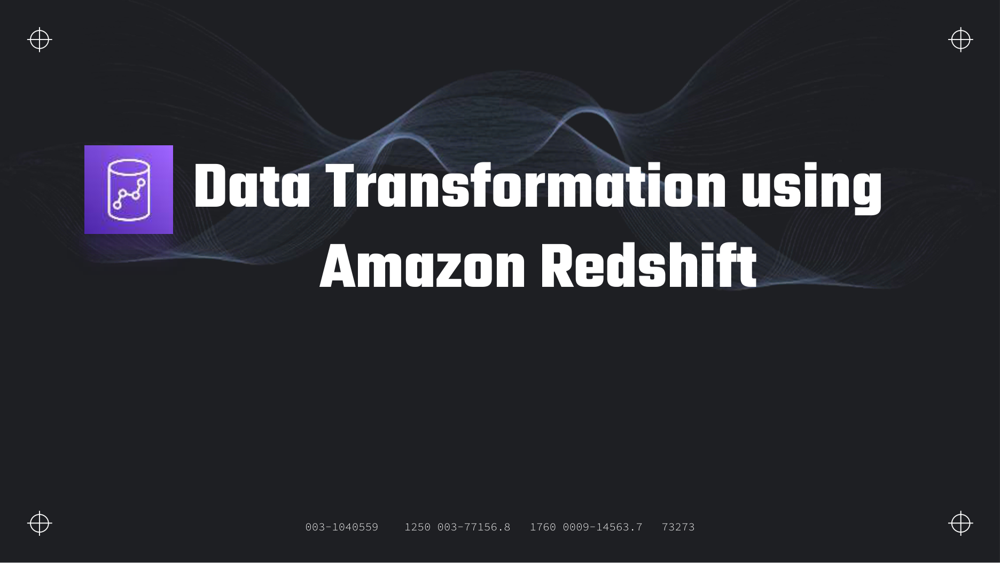
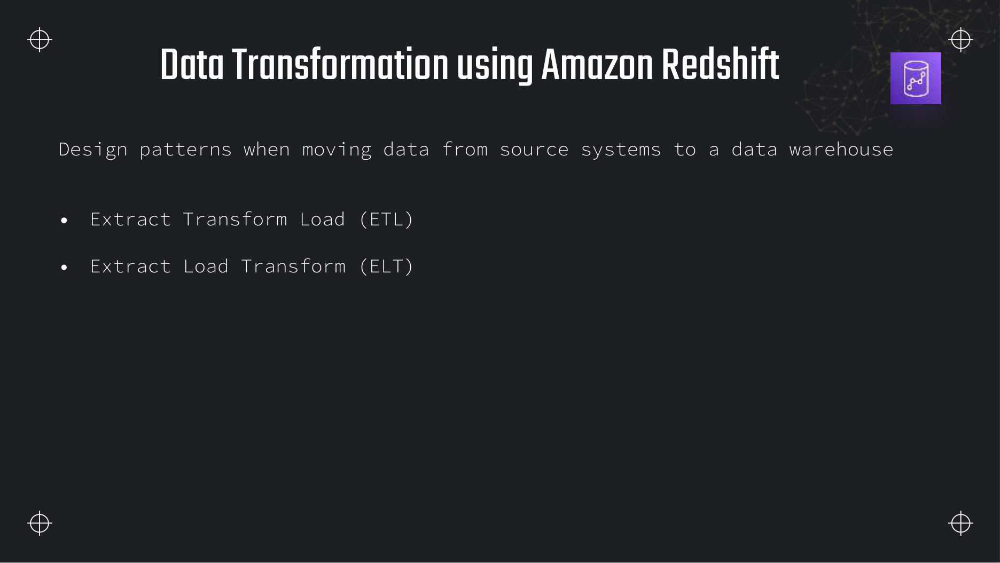
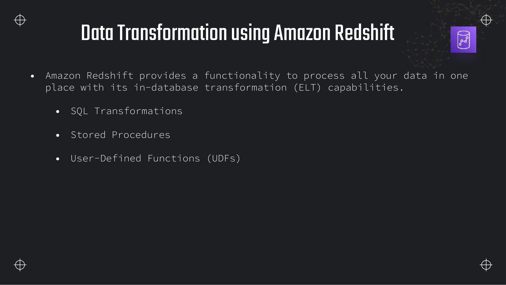
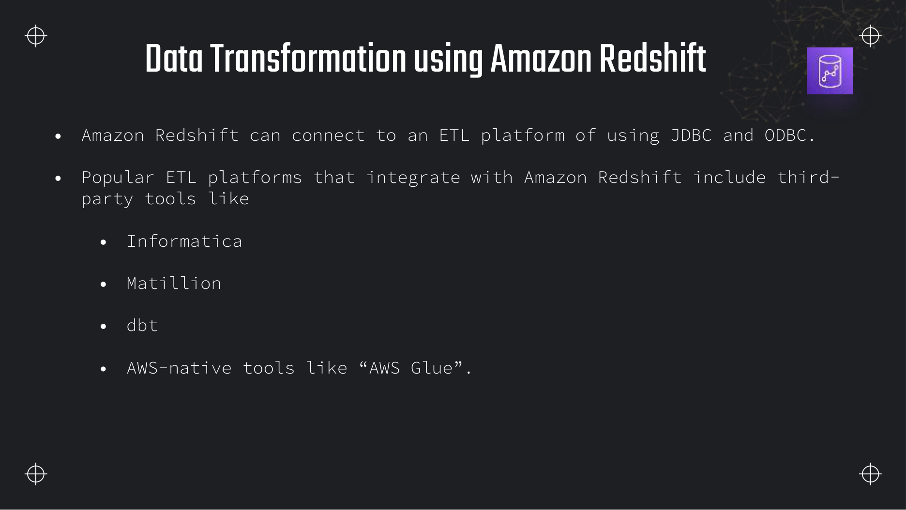
MERGE INTO curated.customers
USING staging.customers s
ON curated.customers.customer_id = s.customer_id
WHEN MATCHED THEN
UPDATE SET name = s.name, email = s.email, updated_at = GETDATE()
WHEN NOT MATCHED THEN
INSERT (customer_id, name, email, created_at)
VALUES (s.customer_id, s.name, s.email, GETDATE());Transformation pushdown means doing filters, projections, and aggregations in Redshift SQL rather than pulling raw rows into Lambda or a small EC2 instance — let MPP handle volume. Staging tables use DISTSTYLE EVEN; curated facts use KEY + SORTKEY.
Federated queries
Federated queries run SQL in Redshift that joins local tables with live data in Amazon RDS or Aurora (PostgreSQL and MySQL). Redshift pushes predicates to the remote engine where possible, reducing data movement — but latency and remote load limits make this a query-time integration, not a replacement for COPY or zero-ETL at scale.
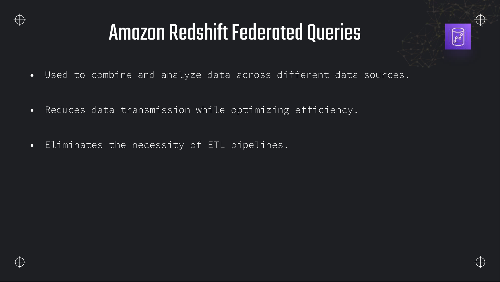
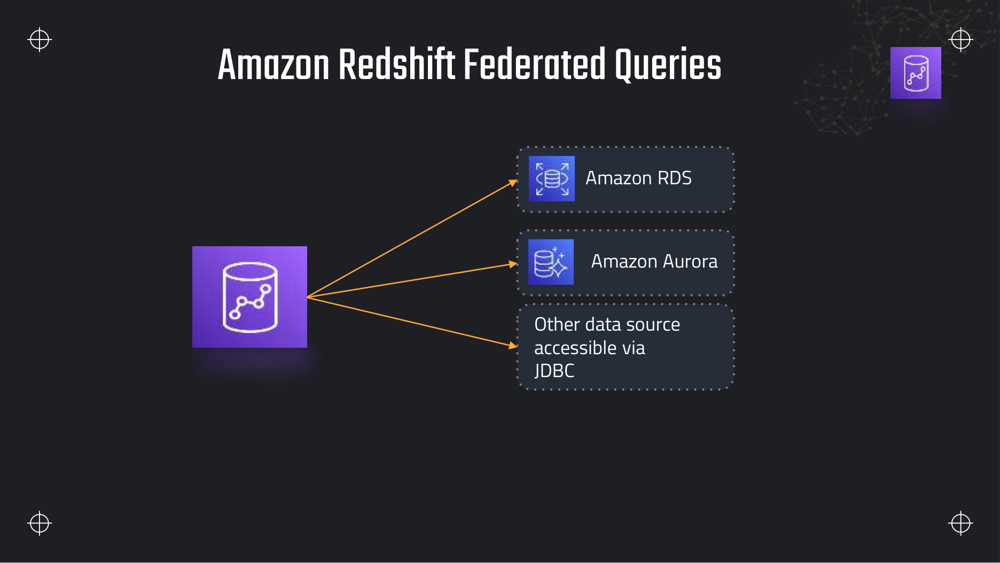
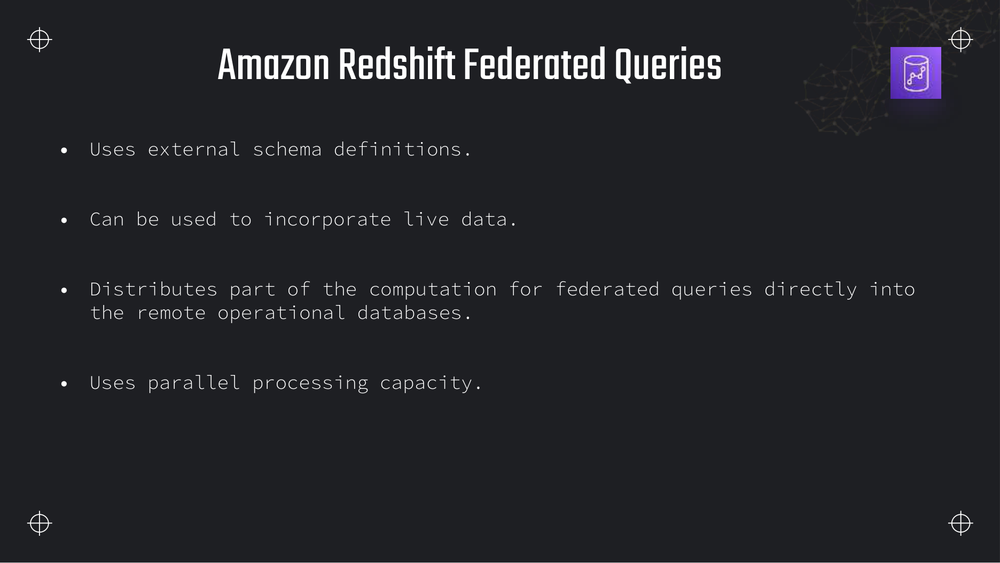
Setup requirements
Create an external schema with CREATE EXTERNAL SCHEMA … FROM POSTGRES DATABASE 'dbname' SCHEMA 'schema' URI 'jdbc:…' SECRET_ARN '…' IAM_ROLE '…'. The secret in Secrets Manager holds the RDS/Aurora credentials. The Redshift cluster IAM role needs permission to read the secret and reach the RDS security group (often via VPC peering or same-VPC placement). Federated queries show up in the plan as Remote Query steps in SVL_QUERY_REPORT — high remote row counts mean you should COPY or zero-ETL instead.
Materialized views
A materialized view stores a precomputed query result physically on disk. Repeated SELECTs read the MV instead of re-scanning base tables — ideal for dashboard queries with predictable SQL. Redshift supports incremental refresh, auto-refresh, and auto query rewrite (optimizer substitutes the MV when equivalent).
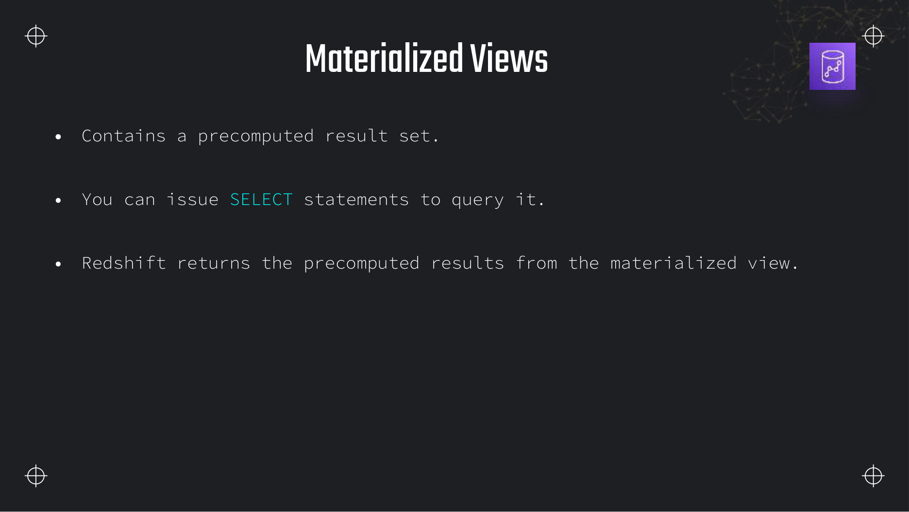
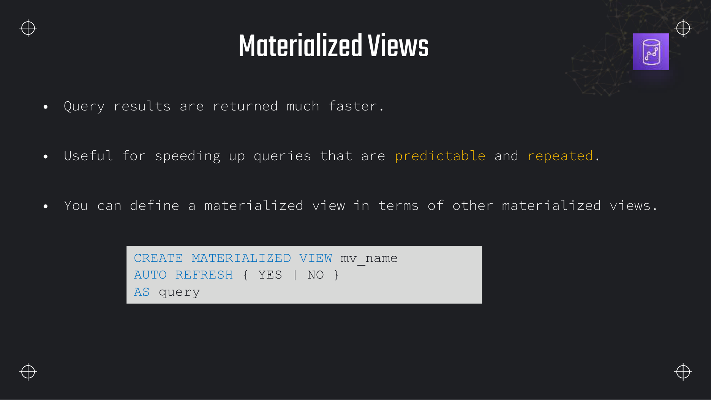
AUTO REFRESH YES for background incremental updates when base tables change.CREATE MATERIALIZED VIEW mv_daily_revenue
AUTO REFRESH YES
AS
SELECT sale_date,
SUM(amount) AS revenue,
COUNT(*) AS order_count
FROM fact_sales
GROUP BY sale_date;Streaming ingestion into a materialized view
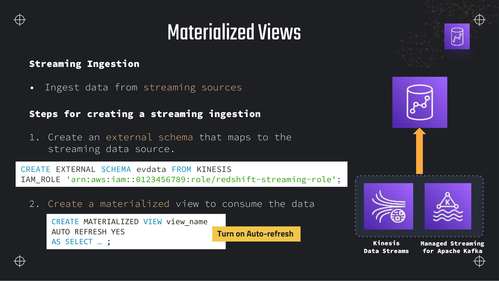
CREATE EXTERNAL SCHEMA evdata FROM KINESIS
IAM_ROLE 'arn:aws:iam::123456789012:role/redshift-streaming-role';
CREATE MATERIALIZED VIEW mv_vehicle_events
AUTO REFRESH YES
AS
SELECT approximate_arrival_timestamp,
partition_key,
JSON_EXTRACT_PATH_TEXT(kinesis_data, 'vehicle_id') AS vehicle_id,
JSON_EXTRACT_PATH_TEXT(kinesis_data, 'speed') AS speed
FROM evdata.raw_stream;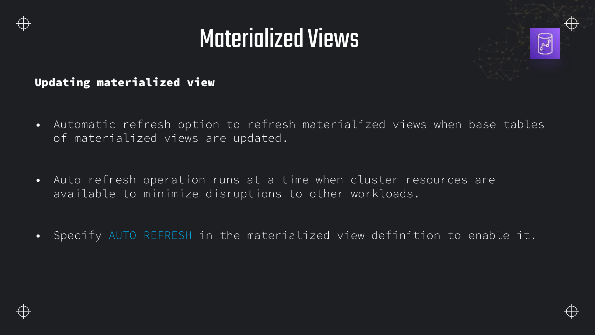
REFRESH MATERIALIZED VIEW mv_daily_revenue;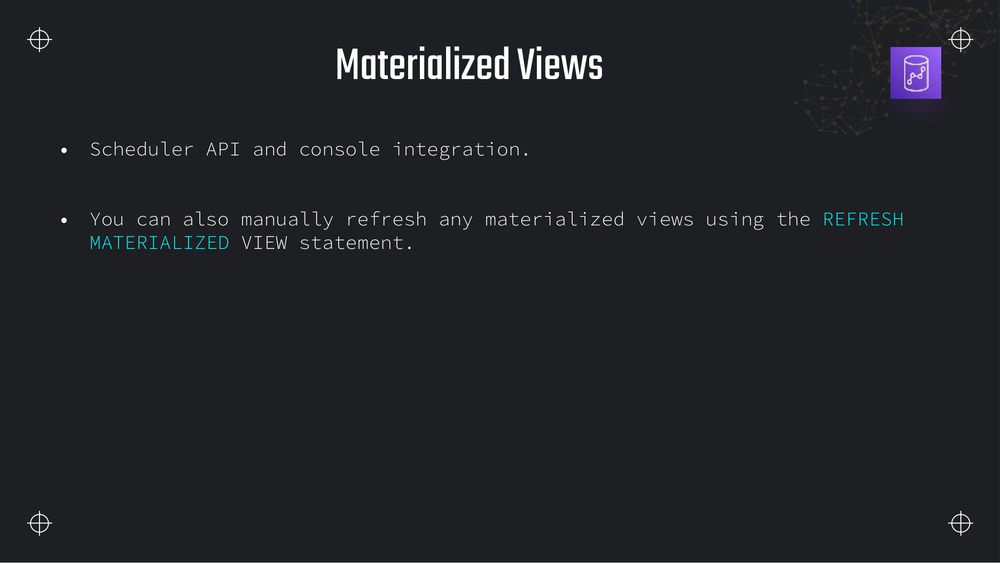
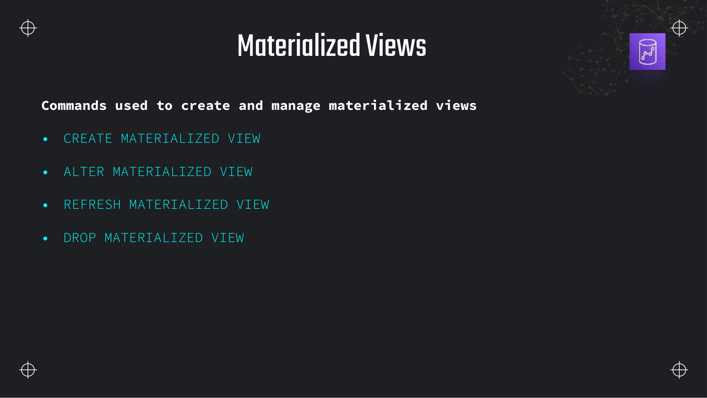
Materialized view limitations
Not every query supports incremental refresh — outer joins, certain aggregates, and non-deterministic functions may require full refresh only. Streaming-ingestion MVs require the external schema to stay reachable and the IAM role to retain Kinesis/MSK read permissions. Auto query rewrite substitutes an MV only when the optimizer proves equivalence; if users write slightly different SQL, they bypass the MV. Nested MVs refresh in dependency order — a stale base MV stalemates downstream MVs. For exam purposes: MVs accelerate repeated read-heavy dashboards; they are not a replacement for proper sort keys on base tables.
Auto query rewrite
When enabled, the optimizer rewrites a SELECT to read from a materialized view if the MV's precomputed result covers the query. This is transparent to the BI tool — no view redefinition required. It requires the MV to stay fresh (AUTO REFRESH or scheduled REFRESH) and statistics on base tables to be current.
Redshift Spectrum
Redshift Spectrum queries data in S3 without loading it into Redshift tables. External tables reference the Glue Data Catalog (or Hive metastore). A separate Spectrum fleet of Redshift-managed nodes scans S3 in parallel while your cluster coordinates the query — you pay per TB of data scanned in addition to cluster compute.
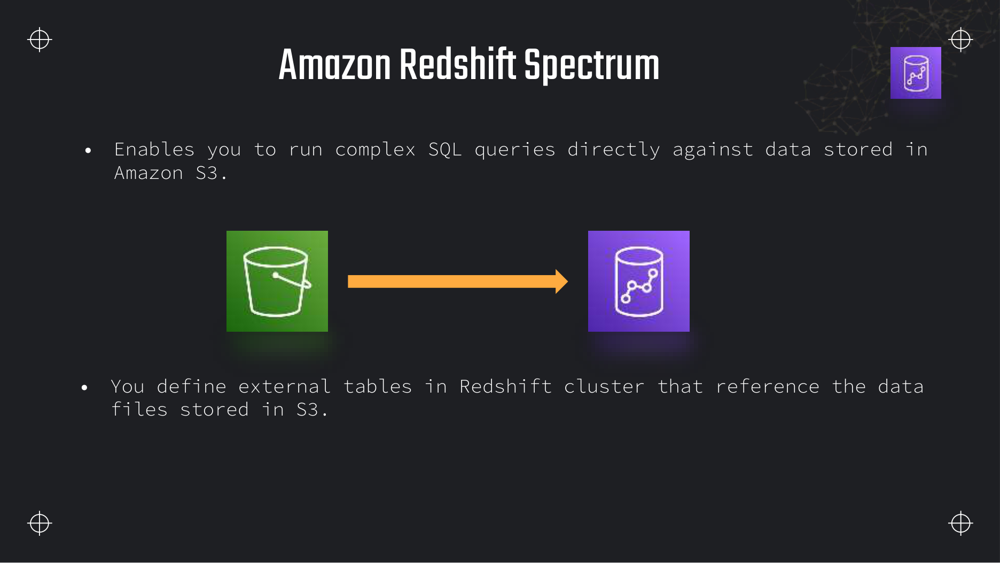
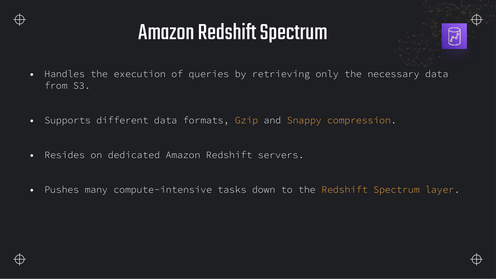
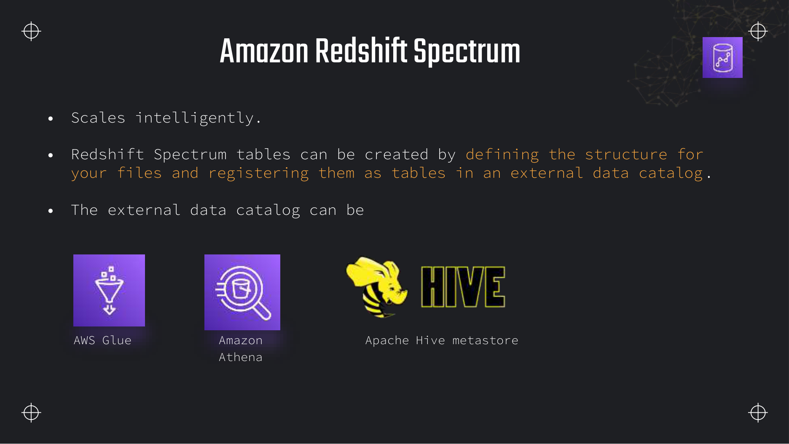
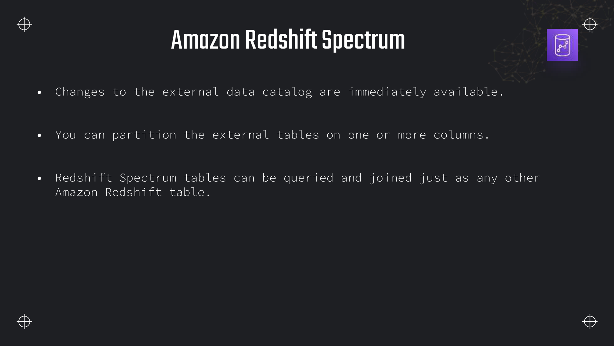
year/month/day columns is mandatory for cost control at scale.CREATE EXTERNAL SCHEMA spectrum_db
FROM DATA CATALOG
DATABASE 'dea_lake_db'
IAM_ROLE 'arn:aws:iam::123456789012:role/RedshiftSpectrumRole'
CREATE EXTERNAL DATABASE IF NOT EXISTS;
CREATE EXTERNAL TABLE spectrum_db.customers (
id INT,
name VARCHAR(100),
city VARCHAR(50)
)
STORED AS PARQUET
LOCATION 's3://dea-lab-ab-4821/curated/customers/';Spectrum considerations
| Dimension | Redshift Spectrum | Athena |
|---|---|---|
| Requires | Redshift cluster or Serverless workgroup | Standalone — no cluster |
| Best for | Joining lake data with loaded Redshift tables in one SQL | Ad-hoc lake queries, no warehouse |
| Pricing | Cluster compute + per-TB Spectrum scan | Per-TB scanned only (plus optional ACU for Spark) |
| Concurrency | WLM + concurrency scaling (400+ with scaling) | Service quotas on concurrent queries |
| Catalog | Glue, Hive, Athena catalog | Glue Data Catalog primary |
System tables and views
Redshift exposes hundreds of read-only system relations prefixed by family. They are how you diagnose load failures, queue waits, skew, and vacuum status — the first place to look when a query is slow.
SELECT * FROM svv_table_info WHERE schema = 'public';| Prefix | Scope | Examples |
|---|---|---|
| STL_ | Logs — historical events | STL_LOAD_ERRORS, STL_ALERT_EVENT_LOG, STL_VACUUM, STL_WLM_QUERY |
| STV_ | Current state snapshots | STV_EXEC_STATE (running queries), STV_INFLIGHT |
| SVL_ | Logs joined for readability | SVL_QUERY_REPORT, SVL_USER_INFO |
| SVV_ | Metadata about objects | SVV_TABLE_INFO, SVV_ALTER_TABLE_RECOMMENDATIONS, SVV_ALL_TABLES |
| SYS_ | Newer unified views | SYS_QUERY_HISTORY |
| SVCS_ | Main + concurrency-scaling cluster | SVCS_QUERY_SUMMARY |
STL_ALERT_EVENT_LOG flags missing stats, nested loops, and large broadcasts. SYS_QUERY_HISTORY is the modern query audit view.SVCS_QUERY_SUMMARY includes queries that ran on concurrency-scaling clusters — check it when users report intermittent slowness during peaks.Diagnostic queries worth memorising
-- Recent load failures
SELECT starttime, filename, colname, err_reason
FROM stl_load_errors ORDER BY starttime DESC LIMIT 20;
-- Query with highest disk spill or broadcast
SELECT query, segment, step, label, bytes, workmem
FROM svl_query_report WHERE query = 12345;
-- Tables needing vacuum
SELECT "table", unsorted, skew_rows, vacuum_sort_benefit
FROM svv_table_info WHERE unsorted > 5 OR skew_rows > 4;
-- Currently queued queries
SELECT userid, query, service_class, queue_time, exec_time
FROM stv_wlm_query_state WHERE queue_time > 0;Redshift Data API
The Redshift Data API runs SQL over HTTPS without a persistent JDBC/ODBC connection. IAM authenticates callers; execution is asynchronous — submit a statement, poll status, fetch results. This is the correct integration for Lambda, Step Functions, and web apps that should not hold database connections.
GetClusterCredentials for temporary DB user/password.AmazonRedshiftDataFullAccess or tighter custom policy. EventBridge captures Data API events for scheduling and alerting.aws redshift-data execute-statement \
--cluster-identifier dea-lab-cluster \
--database dev \
--db-user admin \
--sql "SELECT COUNT(*) FROM curated.customers;"
# Response: {"Id": "uuid-here"}
aws redshift-data describe-statement --id uuid-here
aws redshift-data get-statement-result --id uuid-hereData sharing
Datashares grant consumer clusters live read access to producer objects without copying data. Consumers query shared tables as if local; storage billing stays with the producer, compute with the consumer. Requires RA3 or Serverless; supports cross-account and cross-Region when both sides are encrypted.
Producer / consumer datashare topology
-- Producer cluster
CREATE DATASHARE sales_share;
ALTER DATASHARE sales_share ADD SCHEMA curated;
ALTER DATASHARE sales_share ADD TABLE curated.fact_sales;
ALTER DATASHARE sales_share ADD ALL TABLES IN SCHEMA curated;
GRANT USAGE ON DATASHARE sales_share TO ACCOUNT '987654321098';Standard versus managed datashares
Standard datashares are created and governed entirely in Redshift SQL — producer grants to another account ID or cluster namespace. AWS Data Exchange datashares wrap standard datashares for marketplace publication: external subscribers discover datasets through Data Exchange, and billing/subscription lifecycle is managed there. Lake Formation-managed datashares (where available) apply LF permissions on shared Glue-catalog-backed objects. All types expose live data — none copy bytes to the consumer's storage.
Permissions model
Producer: CREATE DATASHARE, ALTER DATASHARE … ADD TABLE/VIEW/SCHEMA, GRANT USAGE ON DATASHARE TO ACCOUNT/ NAMESPACE. Consumer: accept the share in console or CREATE DATABASE … FROM DATASHARE, then GRANT USAGE ON SCHEMA/TABLE to local roles. Consumers query shared objects with three-part names shared_db.schema.table. Writes always happen on the producer — consumers have read-only access to shared objects.
Workload management
WLM routes incoming queries to queues with configured memory and concurrency slots. When queues fill, queries wait — or spill to concurrency scaling (extra transient clusters billed per second). Short query acceleration (SQA) steals cycles for predicted-short SELECTs so dashboards are not blocked by ETL.
STL_WLM_QUERY and STV_WLM_QUERY_STATE.Concurrency scaling in depth
When WLM queues exceed capacity, concurrency scaling spins up additional transient clusters to run queued queries. You enable it per WLM queue with a scaling mode (auto, manual off/on). Billing is per-second for the scaling cluster only while queries run there. Combined with the main cluster, Redshift supports 400+ concurrent queries at peak — the number the exam cites. Scaling clusters do not hold your data; they read from RMS/local storage on compute nodes. Disable scaling on ETL queues if you prefer queueing over extra cost for batch jobs that can wait.
Diagnosing queueing
Users report "spinning" queries: check SELECT * FROM stv_wlm_query_state WHERE queue_time > 0; for current waits. Historically STL_WLM_QUERY shows total queue time per query ID. If queue time dominates execution time, add concurrency scaling, split queues, or reduce long-running ETL concurrency. QMR can abort queries running longer than N minutes to free slots.
Redshift Serverless
Redshift Serverless removes node management. You configure a namespace (data) and workgroup (compute) with base capacity in RPUs (Redshift Processing Units). Compute scales automatically within max-RPU limits; billing is per-second for RPUs consumed. Always encrypted with KMS.
| Dimension | Redshift Serverless | Redshift provisioned |
|---|---|---|
| Capacity unit | RPU (Redshift Processing Unit), billed per second | Node type × node count, billed per hour |
| Base capacity | Minimum RPUs always warm (e.g. 8–512 RPU range) | Fixed cluster size until resized |
| Scaling | Automatic within max RPU cap | Elastic/classic resize or concurrency scaling |
| WLM | Fully managed | Automatic or manual WLM configuration |
| Encryption | Always KMS (AWS or customer key) | Optional KMS or unencrypted (not recommended) |
| Port | 5431–5455 or 8191–8215 only | Any port |
| When to choose | Variable/spiky SQL, labs, new projects, least ops overhead | Predictable 24/7 heavy load at lowest sustained cost |
Exam decision quick reference
| Scenario phrase | First choice | Why not the distractor |
|---|---|---|
| Bulk load 100 GB from S3 nightly | COPY Parquet, sliced files | INSERT is serial; Glue writes files, COPY loads them |
| Join lake + warehouse in one SQL | Spectrum external tables | Athena cannot see local Redshift tables |
| Aurora OLTP → analytics in seconds | Zero-ETL integration | Federated query scans remote DB repeatedly |
| Share live data to another account | Datashare (RA3/Serverless) | Snapshot is point-in-time, not live |
| Lambda runs SQL, no connection pool | Redshift Data API | JDBC holds connections; Lambda scales out |
| Spiky BI, minimal ops | Redshift Serverless | Idle provisioned cluster still bills hourly |
| Column mask for HR role | Masking policy + ATTACH TO ROLE | Views leak if user has base table GRANT |
| Near-real-time stream → SQL aggregates | Streaming MV from Kinesis/MSK | Firehose to S3 adds latency vs MV path |
Redshift ML
Redshift ML trains and deploys models with SQL — no SageMaker console required for basic flows. CREATE MODEL exports training data to S3, invokes SageMaker Autopilot or a BYOM template, and registers an inference function you call from SELECT.
CREATE MODEL customer_churn_model
FROM (
SELECT tenure, monthly_charges, total_charges, churned
FROM curated.customers_training
)
TARGET churned
FUNCTION churn_predict
IAM_ROLE 'arn:aws:iam::123456789012:role/RedshiftMLRole'
AUTO ON;
-- Inference in SQL
SELECT customer_id, churn_predict(tenure, monthly_charges, total_charges) AS prediction
FROM curated.customers_scoring;Security
Redshift security layers: network isolation in a VPC, encryption at rest and in transit, IAM roles for S3/Glue access, database users/roles for object permissions, and optional audit logging to S3.
Encryption and VPC
- At rest: AES-256 via AWS KMS (SSE-KMS) or CloudHSM; Serverless always encrypted.
- In transit: SSL/TLS to clients; enhanced VPC routing for COPY/UNLOAD through private subnets.
- IAM roles on cluster: Authorize COPY/UNLOAD/Spectrum/Glue without embedding keys in SQL.
- Audit logging: Connection, user, and activity logs to S3 — not enabled by default. Use
STL_CONNECTION_LOGfor connection attempts.
Encryption and audit in production
Enable audit logging to S3 for connection log, user log, and activity log — required for many compliance frameworks and forensics after a suspected data exfiltration. Logs land in a bucket you own; lifecycle them to Glacier. Enhanced VPC routing forces COPY/UNLOAD through the VPC endpoint path. Rotate KMS keys on a schedule when using customer-managed keys; Redshift re-encrypts asynchronously. HSM-backed keys via CloudHSM satisfy stricter regulatory controls than default SSE-KMS.
Access control
Redshift supports native database users/groups, IAM-based federation, and RBAC roles. Privileges are granted with GRANT/REVOKE; default privileges auto-apply to future objects. Cross-database queries let users with permissions read objects in other databases on the same cluster.
GetClusterCredentials / IdP federation.GRANT USAGE ON SCHEMA before table-level SELECT/INSERT.GRANT ROLE finance TO ROLE humanresource; inherits finance privileges.CREATE ROLE analyst;
CREATE ROLE etl_admin;
GRANT USAGE ON SCHEMA curated TO ROLE analyst;
GRANT SELECT ON ALL TABLES IN SCHEMA curated TO ROLE analyst;
GRANT ALL ON SCHEMA staging TO ROLE etl_admin;
GRANT ALL ON ALL TABLES IN SCHEMA staging TO ROLE etl_admin;
GRANT ROLE analyst TO USER bi_user_1;
GRANT ROLE etl_admin TO USER pipeline_svc;
ALTER DEFAULT PRIVILEGES IN SCHEMA curated
GRANT SELECT ON TABLES TO ROLE analyst;Cross-database queries on the same cluster let authorised users SELECT from tables in another database without a datashare — useful for dev/prod separation within one cluster. Grant USAGE ON DATABASE and schema/table privileges explicitly; datashares remain the pattern for cross-cluster or cross-account access.
IAM authentication: Call GetClusterCredentials (or GetClusterCredentialsWithIAM) to mint a temporary DB user/password mapped to an IAM identity. Integrate with SAML/IdP for SSO. See Section 16 for IAM fundamentals.
Fine-grained access control
Beyond schema/table GRANTs, Redshift supports column-level privileges, row-level security (RLS) policies, and dynamic data masking. Policies attach to roles — the same RBAC model as above. Section 1 links here for exam revision on governance.
Column-level access control
GRANT SELECT (customer_id, name, city)
ON curated.customers
TO ROLE analyst;Row-level security
current_user and a mapping table — each manager sees only their warehouse rows.CREATE RLS POLICY view_own_warehouse_inventory
WITH (warehouse_id INTEGER)
USING (
warehouse_id IN (
SELECT managed_warehouse_id
FROM warehouse_managers
WHERE manager_username = CURRENT_USER
)
);
ATTACH RLS POLICY view_own_warehouse_inventory
ON inventory
TO ROLE warehouse_managers;
ALTER TABLE inventory ROW LEVEL SECURITY ON;Dynamic data masking
PRIORITY resolves conflicts when multiple policies target the same column.CREATE MASKING POLICY mask_email
WITH (email VARCHAR(256))
USING ('***'::VARCHAR);
ATTACH MASKING POLICY mask_email
ON employee_data (email)
TO ROLE role_hr
PRIORITY 20;
DETACH MASKING POLICY mask_email
FROM ROLE role_hr
ON employee_data (email);STL_CONNECTION_LOG records successful and failed connections.Deeper detail and exam edge cases
Node quotas, billing meters that sit outside hourly cluster cost, and system-table diagnostics the deck mentions but does not operationalise.
Limits and quotas that decide answers
| Limit | Value | Adjustable? | Why it matters |
|---|---|---|---|
| Concurrent queries (main cluster WLM) | 50 per cluster (default automatic WLM) | Soft (queue tuning) | Query 51 waits or routes to concurrency scaling — not unlimited on the base cluster |
| Concurrency scaling free credits | 1 scaling hour per 24 hours of main cluster runtime (RA3/DC2) | Hard (promo tier) | Beyond free credits, scaling clusters bill per-second — enable only on queues that need burst |
| DC2 local SSD per node | Fixed by node size (e.g. dc2.large 160 GB, dc2.8xlarge 2.56 TB) | Hard | Storage scales only by adding nodes — no RMS overflow like RA3 |
| RA3 RMS storage | Scales to petabytes; billed per GB-month on managed storage | Hard (pricing) | Compute resize does not require data move — but RMS GB-month continues regardless of node count |
| RA3 nodes per cluster | Varies by node type (quota; e.g. up to 128 ra3.4xlarge) | Soft | Large MPP clusters need quota increase request |
| Redshift Serverless RPU range | Base capacity to max RPU cap (e.g. 8–512 RPU per workgroup) | Hard (config) | Workgroup cannot burst above max RPU — queries queue or fail at cap |
| Serverless minimum billable duration | 60 seconds per scaling event | Hard | Very short queries still incur at least one minute of RPU billing per burst |
| Spectrum scan pricing | USD 5.00 per TB scanned (us-east-1, rounded up per MB) | Hard | External table on huge unpartitioned S3 prefix can dwarf cluster cost |
| Data API result size | 100 KB per GetStatementResult page; 100 KB max SQL statement length | Hard | Large result sets need pagination loop in Lambda — not one JSON blob |
| COPY parallelism | One slice per input file per compute node | Hard (design) | Single large file loads on one slice — split to at least total slice count files |
| Elastic resize jump | Typically double or halve node count per operation (varies by type) | Hard | Large jumps need classic resize or chained elastic operations |
| Data sharing | Requires RA3 or Serverless producer | Hard | DC2 clusters cannot publish datashares — migration prerequisite |
| Zero-ETL integrations | Supported sources limited (Aurora, RDS PostgreSQL/MySQL, DynamoDB, etc.) | Hard (product) | Unsupported source needs DMS, Glue, or custom CDC — exam tests knowing when zero-ETL applies |
What you actually pay for
| Billed dimension | Unit | How to spend less |
|---|---|---|
| Provisioned compute nodes | Per node-hour by type | Right-size RA3; delete dev clusters; Serverless for spiky BI |
| RA3 managed storage (RMS) | GB-month | VACUUM dead rows; archive cold history to S3 + Spectrum; UNLOAD then DELETE |
| Concurrency scaling (beyond free credits) | Per-second scaling cluster usage | Enable on BI queues only; schedule ETL off-peak; tune WLM slots first |
| Redshift Serverless | RPU-second (60 s minimum per burst) | Lower max RPU cap; set base capacity to minimum acceptable warm level |
| Spectrum | Per TB data scanned from S3 | Partition external tables; use Parquet; predicate pushdown via partition columns |
| Snapshot storage beyond free | GB-month (free = cluster storage size for automated snapshots) | Shorten retention; delete manual snapshots after restore test |
| Cross-Region snapshot copy | Cross-Region data transfer + snapshot GB-month in target Region | Copy only DR-required snapshots; use datashares within Region where possible |
| Redshift ML | SageMaker training + inference behind CREATE MODEL | Train on sample; drop unused models; BYOM only when Autopilot insufficient |
| Data transfer | Cross-AZ, UNLOAD/COPY to other Regions | Keep S3 bucket same Region as cluster; compress Parquet |
Traps that catch people
- DISTSTYLE ALL multiplication — A 500 MB dimension on ALL is copied to every slice on every node — 8 nodes × 16 slices can mean gigabytes of redundant storage. Use ALL only for small, slow-changing dimensions under ~2 GB compressed.
- Interleaved sort maintenance — Interleaved keys need
VACUUM REINDEX— expensive on large tables. AWS recommends compound keys or SORTKEY AUTO unless filters are evenly split across columns. - Single COPY file — One multi-GB CSV loads through a single slice while others idle. Split into N files where N is a multiple of total cluster slices.
- MAXERROR without monitoring — COPY with
MAXERROR 100silently skips bad rows. CheckSTL_LOAD_ERRORSafter every load — partial loads look successful in job logs. - Materialized view refresh scope — AUTO REFRESH is incremental only when the defining query supports it. Complex joins may full-refresh — schedule during maintenance windows.
- Auto-vacuum sort skip — Auto-vacuum skips sort when table is >95% sorted — but after massive DELETE,
unsortedinSVV_TABLE_INFOmay still hurt range filters until manualVACUUM FULL. - Disk-based query spill — When WLM memory limits are exceeded, sorts and hashes spill to disk — orders of magnitude slower.
SVL_QUERY_SUMMARYshowsis_disk_basedtrue. - Missing ANALYZE —
STL_ALERT_EVENT_LOGwarns on nested loops and missing statistics. Planner chooses bad joins untilANALYZEruns after large COPY. - IAM role chaining on COPY — Cluster IAM role must trust S3 and KMS; chained roles (role A assumes role B for cross-account bucket) need explicit trust on both sides — COPY failures with "Access Denied" often trace here.
- Data API in Lambda — 100 KB statement limit and paginated results — not a replacement for JDBC bulk export. Large SELECTs need UNLOAD to S3.
- Classic vs elastic resize — DC2 → RA3 family change cannot elastic-resize in place — needs classic resize hours or snapshot restore to new cluster.
Troubleshooting playbook
| Symptom | Most likely cause | What to check / fix |
|---|---|---|
| Queries queue indefinitely | WLM slots full (50 concurrent) | STV_WLM_QUERY_STATE; enable concurrency scaling on BI queue; reduce ETL concurrency |
| Query suddenly 10× slower | Disk-based spill or stats regression | SVL_QUERY_SUMMARY for is_disk_based; STL_ALERT_EVENT_LOG for nested loop; run ANALYZE |
High skew_rows in SVV_TABLE_INFO | Bad DISTKEY — NULL or dominant value | Redistribute with new DISTKEY; use EVEN staging then INSERT SELECT |
| COPY loaded fewer rows than S3 files | Rows rejected over MAXERROR | SELECT * FROM stl_load_errors ORDER BY starttime DESC LIMIT 50; |
| Spectrum query expensive/slow | Full prefix scan, JSON not Parquet | Check SVL_S3QUERY_SUMMARY; add partition columns; convert to Parquet |
| UNLOAD/COPY slower after resize | File count not aligned to new slice count | Re-split S3 files to multiple of post-resize total slices |
| MV stale for dashboards | Full refresh running or AUTO REFRESH disabled | SVV_MV_INFO; simplify MV definition for incremental eligibility |
| Data API Lambda truncates results | 100 KB page limit | Loop NextToken on GetStatementResult or UNLOAD to S3 instead |
| Zero-ETL lag growing | Source write spike or integration limit | CloudWatch metrics on integration; check source binlog/WAL retention |
| Concurrency scaling charges spike | Free hour exhausted; ETL queue has scaling enabled | Billing console; disable scaling on batch queues; resize base cluster |
Production patterns
A production RA3 cluster separates BI and ETL with automatic WLM: BI queue with concurrency scaling and SQA enabled; ETL queue with higher memory per slot, scaling disabled, scheduled during off-peak. Facts on DISTKEY of the primary join key; small dimensions on ALL. Nightly COPY from curated S3 Parquet with one file per slice minimum. Spectrum for cold history older than 13 months on partitioned S3.
Post-load maintenance loop
SELECT query, elapsed_time, is_disk_based, rows
FROM svl_query_summary
WHERE query = pg_last_query_id();
SELECT event, solution
FROM stl_alert_event_log
WHERE query = pg_last_query_id();Anti-pattern: DISTSTYLE ALL on a 20 GB "dimension" that grows monthly — storage and broadcast cost explode. Switch to KEY distribution on the join column once the table exceeds ~2 GB compressed.
Where this fits with the rest of the exam
Redshift is the analytical hub connecting lake storage in Section 7, SQL-on-lake in Section 3 (Athena), and operational sources in Section 11 via zero-ETL or DMS.
- Section 3 (Athena) — ad-hoc SQL on S3 without loading; Redshift wins on repeated concurrent BI over modelled tables.
- Section 7 (S3 partitioning) — same partition discipline reduces Spectrum and UNLOAD/COPY cost.
- Aurora zero-ETL — when OLTP stays in Aurora and analytics need near-real-time Redshift tables.
- Section 4 (Glue) — ETL into curated S3 before COPY when zero-ETL source is unsupported.
- Section 9 (DynamoDB) — zero-ETL or Streams → S3 → COPY alternatives for NoSQL sources.
Interview questions
Answer each one out loud before opening it. Redshift carries more exam weight than any other single service in Domain 2.
How do you choose a distribution style for a fact table and its dimension tables?Design
Put the fact table on KEY with DISTKEY set to the foreign key you join most often (e.g. customer_id). Co-locate matching keys on the same slice so joins are local without a redistribution step. Put small dimensions on ALL so every slice has the full dimension locally — ideal under ~2 GB compressed and slow-changing. Use EVEN for staging tables that are loaded and transformed before joining. Use AUTO when unsure and let automatic table optimisation adjust, but in an interview state the explicit KEY + ALL pattern.
Add SORTKEY on the column you filter most (often a date). DISTKEY for joins, SORTKEY for filters — frequently the same column works for both on fact tables.
A Redshift query that used to take 30 seconds now takes 20 minutes. What do you check?Troubleshooting
Work through this order: WLM queueing — STL_WLM_QUERY / STV_WLM_QUERY_STATE for wait time. Query plan regression — SVL_QUERY_REPORT for distribution steps, nested loops, large broadcasts. Table health — SVV_TABLE_INFO for high unsorted or skew_rows. Stale statistics — run ANALYZE; check STL_ALERT_EVENT_LOG for missing stats warnings. Data growth — did a table switch from ALL to too-large for ALL? Concurrency scaling — are bursts queueing because scaling is disabled?
When do you run VACUUM FULL versus relying on auto-vacuum?Performance
Auto-vacuum handles routine DELETE ONLY and sort when tables fall below the 95% sorted threshold. Run VACUUM FULL (or SORT ONLY) manually after large DELETE/UPDATE batches, failed loads, or when SVV_TABLE_INFO.unsorted exceeds ~5% on a heavily filtered table. Use REINDEX after interleaved sort keys degrade. Use BOOST in a maintenance window when you need faster completion. Auto-vacuum is sufficient for steady-state ELT; manual VACUUM is for post-migration cleanup or incident recovery.
Redshift Spectrum versus Athena — when is each the right tool?Comparison
Athena when you need standalone serverless SQL on S3 with no warehouse, minimal ops, and pay-per-scan pricing — ad-hoc analysts, lightweight dashboards, no Redshift cluster in the architecture.
Spectrum when you already have Redshift and need to join lake data (S3/Glue) with loaded warehouse tables in one SQL statement, or BI tools already point at Redshift. You pay cluster compute plus Spectrum scan charges. Spectrum inherits Redshift WLM and security; Athena uses IAM and Lake Formation directly.
Redshift Serverless versus a provisioned RA3 cluster — how do you decide?Comparison
Serverless for variable or unknown workload, dev/test, spiky BI, and any "least operational overhead" requirement. Pay per RPU-second; set base capacity for warm start and max RPU cap for cost control. Always encrypted.
Provisioned RA3 for predictable 24/7 heavy query load where sustained node hours are cheaper than Serverless RPUs, fine-grained WLM tuning matters, or you need features with specific node sizing. Add concurrency scaling for peaks rather than oversizing the base cluster.
What causes WLM queueing and how do you fix it?Troubleshooting
Queueing happens when active queries exceed a queue's concurrency slots — common when long ETL jobs fill the default queue while BI users wait. Fixes: enable automatic WLM or split ETL and BI into separate queues with user/query group routing; enable concurrency scaling; turn on SQA for short SELECTs; use QMR to kill runaway queries; schedule heavy ETL off-peak; right-size the cluster or Serverless max RPUs.
What is Aurora zero-ETL integration and when would you choose it over Glue?Design
Zero-ETL replicates Aurora (and RDS/DynamoDB) changes into Redshift within seconds through a managed integration — no S3 staging, no Glue job, no CDC code. Choose it when transactional data must be analysable in Redshift near-real-time with minimal pipeline ops. Choose Glue when you need complex transforms before load, multiple non-Aurora sources, or landing curated Parquet in S3 for the whole lake.
Datashare versus snapshot copy — when do you use each?Comparison
Datashare for live, read-only access across clusters/accounts/Regions without duplication — analytics on current data, data mesh patterns, separating compute (consumer) from storage (producer). Consumer pays query compute; producer pays storage.
Snapshot copy/restore for point-in-time backup, DR, migrating to a new Region/account, or when consumers need a mutable copy isolated from production. Snapshots are static until restored; restore creates a new cluster.
Explain row-level security in Redshift and how it differs from a WHERE clause in a view.Security
RLS policies attach to a table and filter rows transparently for every query — users cannot bypass by writing their own SQL. A secured view with a WHERE on current_user can be bypassed if the user has direct table access. RLS requires CREATE RLS POLICY, ATTACH RLS POLICY … TO ROLE, and ALTER TABLE … ROW LEVEL SECURITY ON. Policies can reference mapping tables, making them dynamic as assignments change.
Why is COPY preferred over INSERT for loading a 500 GB file from S3?Performance
COPY parallelises across all slices — each slice reads and loads its portion simultaneously using MPP. INSERT sends rows through the leader sequentially (or in small batches), bottlenecking on one node. COPY also applies optimal column encodings (COMPUPDATE), handles compressed formats, and supports manifest-based multi-file loads. Split files to a multiple of total slice count for even distribution.
What is the leader node's role and does it store user data?Architecture
The leader parses SQL, builds the distributed plan, assigns work to slices, coordinates shuffles, and aggregates results. In a multi-node cluster it does not store user table data — only metadata. In a single-node cluster the one node is both leader and compute. Client connections always terminate on the leader.
How does enhanced VPC routing affect COPY and UNLOAD?Security
Without enhanced VPC routing, COPY/UNLOAD traffic between Redshift and S3 may traverse the public internet (still encrypted). With it enabled, traffic routes through the VPC using VPC endpoints or your network path — required by many compliance policies. Note: Spectrum on provisioned clusters does not support enhanced VPC routing — an exam gotcha when a scenario demands both Spectrum and private-only S3 access.
What are RA3 nodes and why did AWS introduce Redshift Managed Storage?Architecture
RA3 separates compute from storage. Hot blocks sit on local SSD; cold blocks migrate to S3 durably under RMS. Scale compute nodes without moving data; store petabytes without proportional compute growth. DC2 couples storage to nodes — adding capacity means adding nodes even if you only need disk. RA3 also enables multi-AZ, datashares at scale, and is the migration target from legacy DS2.
How do you invoke Redshift from Lambda without managing JDBC connection pools?Design
Use the Redshift Data API: call ExecuteStatement with cluster/workgroup identifier and IAM auth, poll DescribeStatement, fetch results with GetStatementResult. No persistent TCP connection — fits Lambda timeout and concurrency model. Attach AmazonRedshiftDataFullAccess or a scoped policy. Mind limits: 100 MB result size, 200 active queries, 24-hour result retention.
Hands-on practice
Redshift is not free tier. Prefer Serverless with low base capacity, or delete provisioned clusters within the hour.
dc2.large cluster bills ~0.25 USD/hour (~6 USD/day). Serverless base capacity also accrues per-second charges when queries run. Always delete the namespace/workgroup or cluster before closing the console tab.-
Create a Redshift Serverless namespace and workgroup in
Redshift → Serverless dashboard → Create namespace and workgroupus-east-1with base capacity 8 RPUs. Open query editor v2, create schemalab, run the distribution-key DDL from the notes, and confirm tables exist.SELECT tablename FROM svv_tables WHERE schemaname = 'lab';listsdim_customer,fact_sales, andstaging_sales.Show stepsConsole + SQL
- Set a 5 USD budget alert first.
- Amazon Redshift → Serverless → Create namespace — name
dea-lab-ns, KMS encrypt on. - Create workgroup
dea-lab-wg, base capacity 8 RPUs, max 32 RPUs. - Open Query editor v2, connect to
dea-lab-wg, databasedev. - Paste and run the CREATE TABLE block from the distribution section (adjust schema to
lab).
Cleanup: Serverless dashboard → select workgroup → Delete. Then delete namespace. Confirm zero workgroups remain.
-
Upload
S3 → Upload · IAM → Role · Redshift → Manage IAM rolesdata/customers.csvtos3://dea-lab-<initials>-<random>/staging/customers/, attach an IAM role to Redshift with S3 read access, and COPY intostaging.customers.SELECT COUNT(*) FROM staging.customers;returns 11 (including the duplicate row).Show stepsConsole + SQL
BUCKET=dea-lab-ab-4821 aws s3 cp data/customers.csv s3://$BUCKET/staging/customers/customers.csv- Create IAM role
RedshiftLoadRoletrusted by Redshift withs3:GetObjecton your bucket. - Attach role to cluster/workgroup under Properties → IAM roles.
- Create staging table matching CSV columns, then COPY (see integrations section).
Cleanup: drop staging table; detach IAM role if deleting cluster.
- Create IAM role
-
Query
Query editor v2SVV_TABLE_INFOafter the load and identify theunsortedandskew_rowscolumns. RunANALYZEand optionallyVACUUMon the staging table.SVV_TABLE_INFOshows statistics refreshed;unsortednear 0 after VACUUM if sort key defined.Show stepsSQL
SELECT "table", size, tbl_rows, skew_rows, unsorted, vacuum_sort_benefit FROM svv_table_info WHERE schema = 'staging'; ANALYZE staging.customers; VACUUM staging.customers; -
From the CLI, submit a query through the Redshift Data API against your workgroup and retrieve the row count result.
Terminal → AWS CLIdescribe-statementstatusFINISHED; result Records show count 11.Show stepsCLI
aws redshift-data execute-statement \ --workgroup-name dea-lab-wg \ --database dev \ --secret-arn arn:aws:secretsmanager:us-east-1:ACCOUNT:secret:redshift-admin \ --sql "SELECT COUNT(*) FROM staging.customers;"Poll with
describe-statement --id <id>, thenget-statement-result.Cleanup: delete Serverless workgroup and namespace; delete Secrets Manager secret if created for the lab.
-
If you used a provisioned
Redshift → Clusters → Pause → Deletedc2.largecluster instead of Serverless: pause it after the lab, then delete it. Verify no clusters remain in the Region.aws redshift describe-clusters --query 'Clusters[].ClusterIdentifier'returns[].Show stepsConsole + CLI
aws redshift describe-clusters --region us-east-1 \ --query 'Clusters[].{Id:ClusterIdentifier,Status:ClusterStatus}' aws redshift delete-cluster --cluster-identifier dea-lab-cluster \ --skip-final-cluster-snapshot --region us-east-1Paused clusters still bill for storage on DC2. Delete, do not just pause, when the lab ends.
Recap
- Redshift = columnar MPP warehouse; leader plans, compute slices execute. RA3 + RMS separates compute from S3-backed storage.
- Distribution: KEY on join column (facts), ALL on small dims, EVEN on staging, AUTO default. SORTKEY (or AUTO) on filter columns; zone maps skip blocks.
- COPY parallel load beats INSERT; split files to slice multiple; UNLOAD exports parallel to S3. Zero-ETL for Aurora/RDS/DynamoDB near-real-time.
- VACUUM recycles dead rows and re-sorts; ANALYZE refreshes stats. Check SVV_TABLE_INFO for unsorted/skew.
- Spectrum queries S3 via Glue catalog — same Region required; pay per TB scanned plus cluster. Join lake + warehouse in one SQL.
- Datashares = live cross-cluster/account/Region access on RA3/Serverless; snapshots = point-in-time DR/migration.
- WLM queues + concurrency scaling (400+ with scaling) + SQA for short queries. Serverless auto-manages WLM.
- Serverless = RPUs per second, always encrypted; provisioned = node hours, resize elastic/classic/snapshot.
- Data API for Lambda — no JDBC pool; 200 active queries, 100 MB results.
- FGAC: column GRANT, RLS policies (CREATE + ATTACH + ALTER TABLE RLS ON), masking policies with PRIORITY.
- Groups cannot nest; roles can. IAM GetClusterCredentials for federated DB auth.
- dc2.large ≈ 0.25 USD/hour — not free tier. Delete Serverless namespace/workgroup or cluster same day.